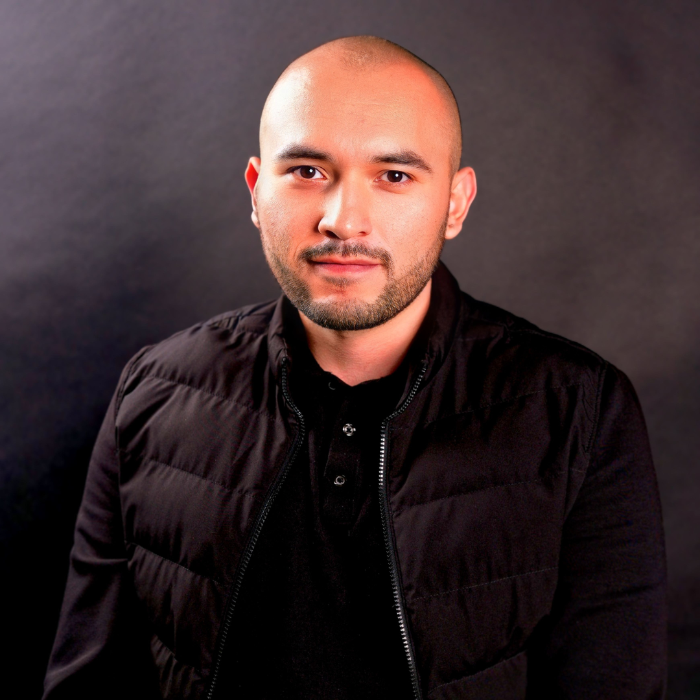

Desde 2018 dentro de cuentas reales, con presupuesto real y margen real en juego. El Protocolo ACOS es el método que uso todos los días, no una promesa de venta.

Trabajo como trafficker de planta y como profesional independiente desde 2018. Diseño y ejecuto sistemas de adquisición digital sobre WordPress, WooCommerce y Shopify, con Google Ads, Microsoft Ads, Meta Ads, TikTok Ads y DSPs.
El objetivo siempre es el mismo: un flujo consistente y medible de clientes nuevos cada mes, no un pico aislado que se apaga cuando se acaba el presupuesto de prueba.
Para negocios B2B construyo el mismo sistema del lado de prospección: LinkedIn Sales Navigator y Mailchimp integrados al flujo comercial, para que el equipo de ventas reciba prospectos nuevos de forma constante.
El Protocolo ACOS no nació en un cuaderno. Es la síntesis de la inteligencia de negocio y los sistemas comerciales de startups y agencias de alto rendimiento donde operé presupuesto real y el margen no perdonaba errores.
He manejado más de $5,000,000 MXN mensuales entre plataformas, escalando ingreso vía pauta digital en marcas de eCommerce de estos sectores.
Marcas de ropa y accesorios, de diseñador y multimarca.
Marcas de consumo directo al cliente, incluyendo café.
Marcas internacionales de calzado con canal directo al consumidor.
Marcas ligadas a comunidades deportivas y de estilo de vida.
Cadenas hoteleras con reservación directa como canal de venta.
Generación de prospectos para negocios que venden a otras empresas.
No mencionamos nombres de marca por acuerdos de confidencialidad con clientes anteriores. Podemos compartir casos y cifras verificables en la llamada de descubrimiento.
Esto es lo que tu diagnóstico hereda de esta trayectoria, en la práctica.
Quien revisa tu cuenta es quien ha revisado presupuestos de $5M+ MXN al mes. Sabe distinguir una campaña sana de una que solo se ve bien en el reporte.
Moda, alimentos, calzado, hospitalidad, B2B: la lógica de unit economics es la misma. Solo cambian los supuestos, no el método.
No hay un junior leyendo un guion entre tú y la persona que realmente entiende tu operación. Hablas directo con quien va a diagnosticarte.
30 minutos para saber si el Protocolo ACOS te sirve. Sin pitch genérico.